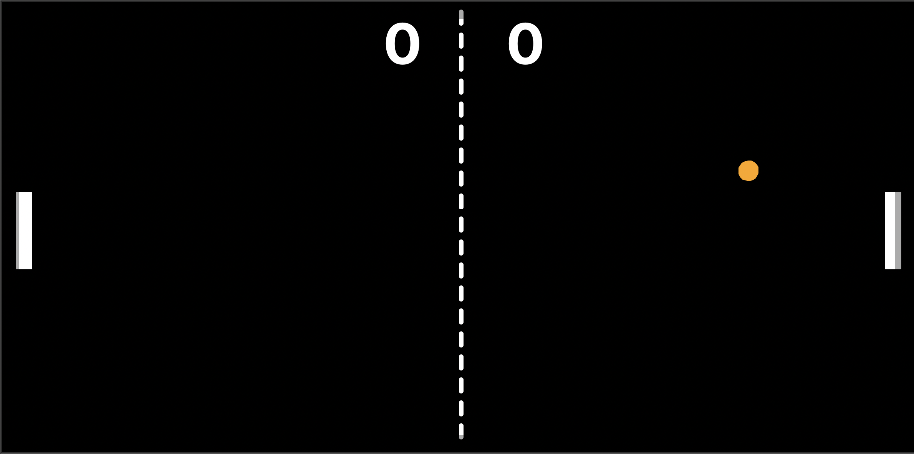
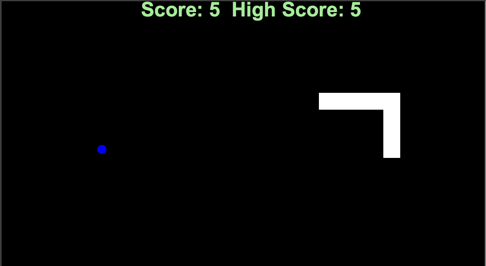
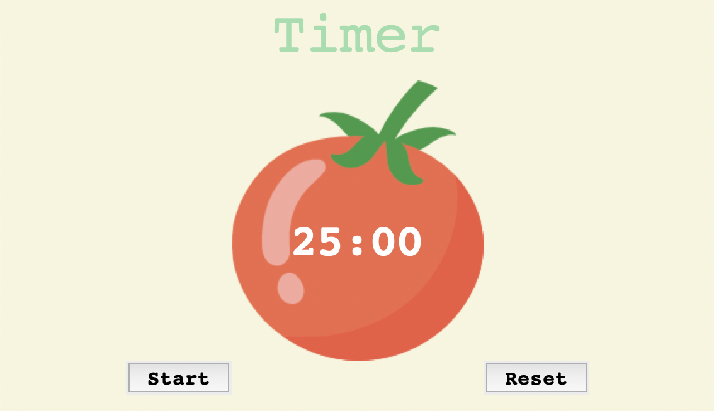
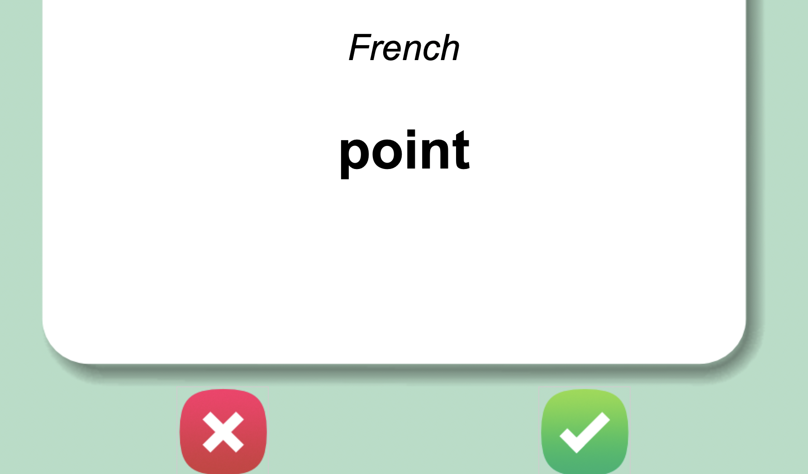
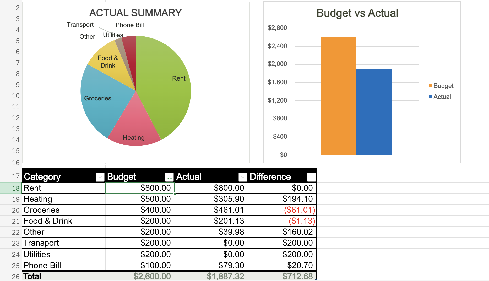
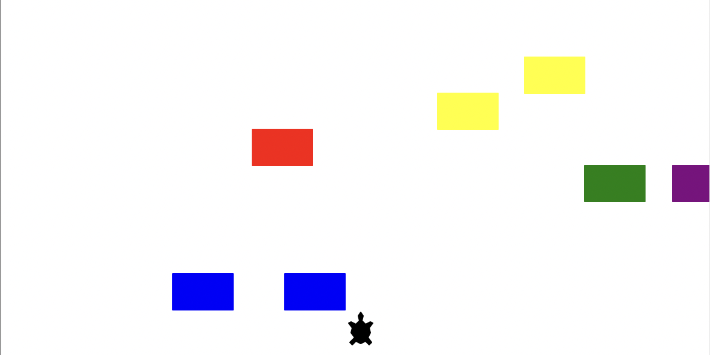

I'm Fardin
I code, develop, and analyze

Hello.
I am attending Saint Mary's University to understand the science of computers. Learning multiple programming languages has enabled me to command the machines, and they seem to be obidient. Additionally, I grew a passion for the art of developing websites, and this webpage that I built for myself is a testament to it.
Now, with the world doubling the amount of digital data produced every year, I am focusing on becoming an exceptional data analyst. Through Google's Data Analytics Certificate program, I am learning how to help organizations manage their wealth of data and provide crucial insights.
My Skills

Programming
I have spent hours coding in Java and Python. From basic concepts like conditionals and loops, to advanced level object-oriented programming, I am well experienced.

Web Development
I use HTML, CSS and JavaScript to turn a design into a website. As I learn back-end development on Dr. Angela Yu's web developing course on udemy, I am on my way to become a full-stack developer.

Data Analysis
With my proficiency in Excel, I worked on many personal projects like the Budget Planner and the College Course Tracker. I continue to learn how to prepare, process and analyze data using languages and tools like SQL, R, and Tableau on Google's data analytics course.
My Projects
The Pong Game
The classic arcade game Pong built using Python. The ball will bounce off the paddles, the upper wall, and the downward. If one player misses the ball, the other player scores a point. The player to score 10 first wins (customizable).
Famous Snake Game
The classic snake game (famously played on early Nokia phones) built using Python. The goal is simple: control the snake, eat the food, and grow longer. The game keeps track of the highest score, so challenge yourself to beat it every time you play!
Pomodoro
A simple desktop software to use the famous pomodoro technique: a method that helps individuals stay productive by breaking down their work into focused intervals, traditionally 25 minutes of work followed by a short break.
French Flashcards
An application designed to help users learn French vocabulary through digital flashcards. It presents words in French and asks the user to recall the English translation, excluding words from the dataset that the user gets right.
Budget Planner
A Microsoft Excel application for personal budgeting, allowing for daily transaction entry by category, to gain valuable insights through simple inputs.
Cardodge Game
It is a simple game about making your turtle cross a road despite oncoming traffic. I mean, who expects turtles to follow traffic rules, right?
PS the game increases in difficulty as you progress!
Get In Touch
Connect via LinkedIn, follow me on GitHub, or send me an email
I am seeking an internship opportunity in the field of software / web development or data analytics. If you think I will add any value to your team, please reach out to me!